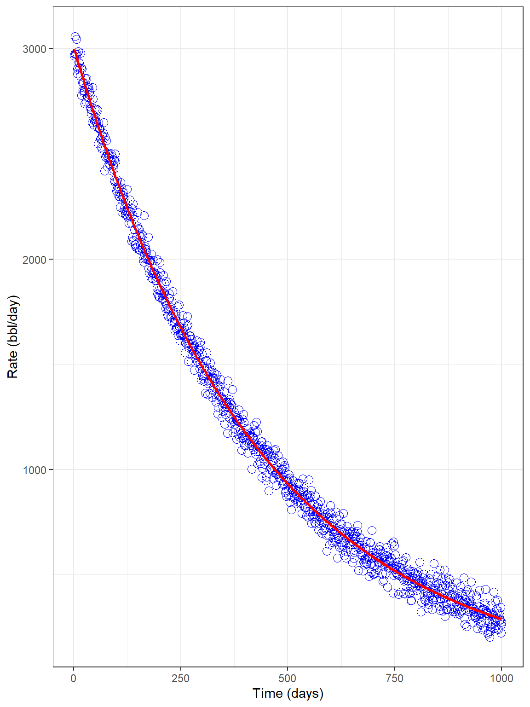
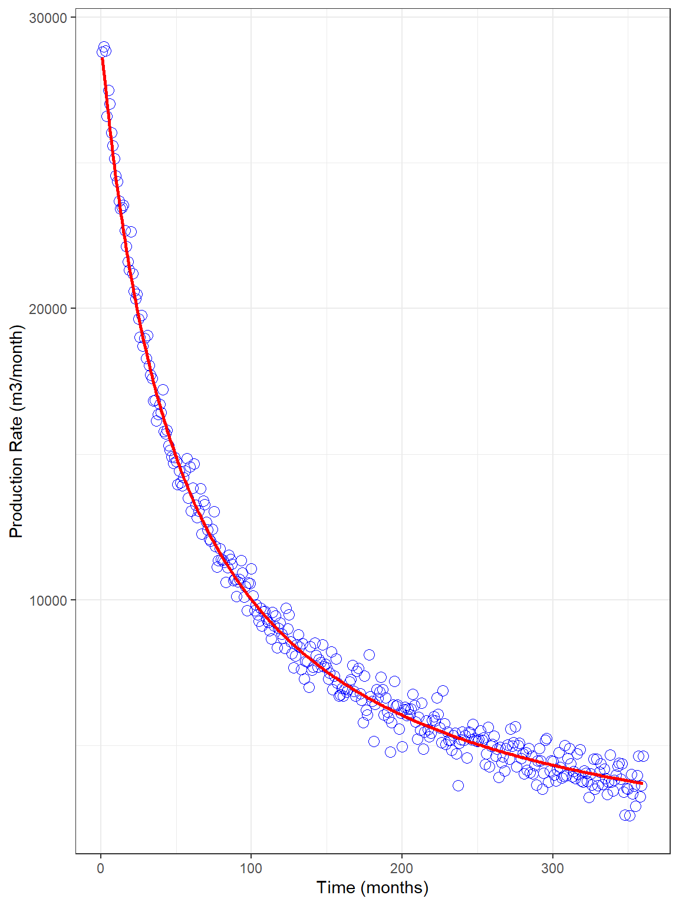

Rdca Package
Rdca.Rmd
Rdca
Rdca is a Decline Curve Analysis (DCA) package for oil and gas reservoirs. It generates a table of rate, cumulative, nominal decline rate, and derivative of loss-ratio over time in a data frame format. It also provides an optimization tool to fit a DCA model on production data. The package currently supports Arps ‘exponential’, ‘harmonic’, ‘hyperbolic’, and ‘modified_hyperbolic’ models (Arps, 1945; Robertson, 1988).
DCA predictions are generated using three different functions: decline_param(), decline_time(), and decline_predict(). There are two more functions for the curve fitting exercises: decline_fit_param(), and decline_fit().
decline_param() arguments
-
input_unit: A unit system for input parameters, either ‘Field’ or ‘SI’. -
output_unit: A unit system for output predictions, either ‘Field’ or ‘SI’. -
fluid: Type of fluid, either ‘gas’ or ‘oil’. -
model: Arps DCA model. -
qi: Arps model parameter, initial rate. -
Di: Arps model parameter, nominal decline rate. -
b: Arps model parameter, decline constant. -
Dt: Arps modified_hyperbolic model parameter, terminal nominal decline rate. -
q_abnd: Abandonment rate, an optional input parameter. If assigned a value, the model predicts time to reach to the abandonment rate, and also the estimated ultimate recovery (EUR).
decline_time() arguments
-
x: A vector or sequence of times/dates. -
unit: A unit system for input vector x.
decline_predict() arguments
-
decline_lst: A list of decline parameters of class ‘decline’. -
time_lst: A list of decline time of class ‘time/date’.
decline_fit_param() arguments
-
input_unit: A unit system for input parameters, either ‘Field’ or ‘SI’. -
output_unit: A unit system for output predictions, either ‘Field’ or ‘SI’. -
fluid: Type of fluid, either ‘gas’ or ‘oil’. -
model: Arps DCA model. -
fit_data: Fitting data, either ‘rate’ or ‘cum’. -
prod_data: A numeric vector of fitting data. -
initial_param: A vector of initial estimates for the Arps DCA model parameters. -
lower: A vector of lower bounds for the Arps DCA model parameters, optional. See packageminpack.lmfor more information. -
upper: A vector of upper bounds for the Arps DCA model parameters, optional. See packageminpack.lmfor more information. -
control: An optional list of control settings in the optimization toolbox. See packageminpack.lmfor more information.
decline_fit() arguments
-
decline_fit_lst: A list of decline fit parameters of class ‘decline_fit’. -
time_lst: A list of decline time of class ‘time/date’.
Units for input parameters
The input_unit is either ‘SI’ or ‘Field’. Depending on the input_unit system, the following units are used for the input parameters:
-
qi: Arp’s decline parameter, a numeric value. Depending on the ‘input_unit’, ‘fluid’ type, and also the decline_time() ‘unit’ parameter, it has different units. ‘m3/day’ for gas production in ‘SI’ unit with daily data, ‘m3/month’ for gas production in ‘SI’ unit with monthly data, ‘MSCF/day’ for gas production in ‘Field’ unit with daily data, ‘MSCF/month’ for gas production in ‘Field’ unit with monthly data, ‘m3/day’ for oil production in ‘SI’ unit with daily data, ‘m3/month’ for oil production in ‘SI’ unit with monthly data, ‘bbl/day’ for oil production in ‘Field’ unit with daily data, and ‘bbl/month’ for oil production in ‘Field’ unit with monthly data. -
Di: Arp’s nominal decline parameter, a numeric value in ‘1/day’, ‘1/month’, or ‘1/year’ depending on the decline_time() ‘unit’ parameter. -
b: Arp’s decline parameter. It is zero for the ‘exponential’ model, one for the ‘harmonic’ model, and a value between zero and one for the ‘hyperbolic’ model. For unconventional reservoirs, b values more than one are also reported. -
Dt: Arp’s ‘modified_hyperbolic’ nominal terminal decline parameter, a numeric value in ‘1/day’, ‘1/month’, or ‘1/year’ depending on the decline_time() ‘unit’ input. -
q_abnd: Abandonment rate, a numeric value defaulted to NULL. If present, the model predicts the time to reach to the abandonment rate and also the estimated ultimate recovery (EUR) till the abandonment time. It has the same unit as ‘qi’. -
unit: time/date unit for the x vector. For a vector of time values, the unit is ‘day’, ‘month’, or ‘year’. For a sequence of dates, the unit is ‘date’. Daily parameters must be used with the ‘date’ unit in the DCA.
Outputs
-
Date: Date -
Time: Time -
q: Production rate -
Q: Cumulative production -
D: Nominal decline rate (1/loss-ratio) -
Beta: Loss-ratio derivative wrt time -
time_abnd: Time to reach to the abandonment rate (if ‘abnd_rate’ is provided) -
EUR: Estimated ultimate recovery at abandonment rate (if ‘abnd_rate’ is provided)
A note on Di
Arps Di parameter is the nominal decline rate in ‘1/day’, ‘1/month’, or ‘1/year’. It represents the rate of decline at a specific time. However, the rate of decline is often expressed for a particular period (usually one year) and is called the effective decline rate (di) in ‘1/year’. The relationship between Di and di for Arps models are as follows:
- Exponential
\[D_{i} = \frac{-log(1 - d_{i})}{365}\:\:\:\:\:\:\:\:\:\:\:\:\:\:\:\:\:\:\:\:\:\:\:\:\:\:\:\:\:\:\:\: \frac{1}{day}\]
\[D_{i} = \frac{-log(1 - d_{i})}{12}\:\:\:\:\:\:\:\:\:\:\:\:\:\:\:\:\:\:\:\:\:\:\:\:\:\:\:\:\:\:\:\: \frac{1}{month}\]
\[D_{i} = -log(1 - d_{i}) \:\:\:\:\:\:\:\:\:\:\:\:\:\:\:\:\:\:\:\:\:\:\:\:\:\:\:\:\:\:\:\:\:\:\: \frac{1}{year}\]
- Harmonic
\[D_{i} = \frac{d_{i}}{(1 - d_{i}) . 365}\:\:\:\:\:\:\:\:\:\:\:\:\:\:\:\:\:\:\:\:\:\:\:\:\:\:\:\:\:\:\: \frac{1}{day}\]
\[D_{i} = \frac{d_{i}}{(1 - d_{i}) . 12}\:\:\:\:\:\:\:\:\:\:\:\:\:\:\:\:\:\:\:\:\:\:\:\:\:\:\:\:\:\:\:\:\:\: \frac{1}{month}\]
\[D_{i} = \frac{d_{i}}{(1 - d_{i})}\:\:\:\:\:\:\:\:\:\:\:\:\:\:\:\:\:\:\:\:\:\:\:\:\:\:\:\:\:\:\:\:\:\:\:\:\:\:\:\: \frac{1}{year}\]
- Hyperbolic
\[D_{i} = \frac{1}{b}.\frac{[(1 - d_{i})^{-b} - 1]}{365}\:\:\:\:\:\:\:\:\:\:\:\:\:\:\:\:\:\:\: \frac{1}{day}\]
\[D_{i} = \frac{1}{b}.\frac{[(1 - d_{i})^{-b} - 1]}{12}\:\:\:\:\:\:\:\:\:\:\:\:\:\:\:\:\:\:\:\: \frac{1}{month}\]
\[D_{i} = \frac{1}{b}.[(1 - d_{i})^{-b} - 1]\:\:\:\:\:\:\:\:\:\:\:\:\:\:\:\:\:\:\:\:\:\: \frac{1}{year}\]
Arps Exponential Examples
Example 1:
library(Rdca) library(magrittr) library(ggplot2) library(ggpubr) dcl_param_exp <- decline_param(input_unit = "Field", output_unit = "Field", fluid = "oil", model = "exponential", qi = 1000, Di = 0.0015, b = 0, q_abnd = NULL) dcl_param_exp #> $input_unit #> [1] "Field" #> #> $output_unit #> [1] "Field" #> #> $fluid #> [1] "oil" #> #> $qi #> [1] 1000 #> #> $Di #> [1] 0.0015 #> #> $b #> [1] 0 #> #> attr(,"class") #> [1] "exponential" "decline" decline_time_exp <- decline_time(c(1:7300), unit = "day") str(decline_time_exp) #> List of 3 #> $ t : int [1:7300] 1 2 3 4 5 6 7 8 9 10 ... #> $ unit : chr "day" #> $ reference_date: Date[1:1], format: "2020-05-25" #> - attr(*, "class")= chr [1:2] "day" "time" decline_predict_exp <- decline_predict(dcl_param_exp, decline_time_exp) head(decline_predict_exp, 10) #> Date Time_(day) q_(bbl/day) Q_(bbl) D_(1/day) Beta #> 1 2020-05-25 1 998.5011 999.2504 0.0015 0 #> 2 2020-05-26 2 997.0045 1997.0030 0.0015 0 #> 3 2020-05-27 3 995.5101 2993.2601 0.0015 0 #> 4 2020-05-28 4 994.0180 3988.0240 0.0015 0 #> 5 2020-05-29 5 992.5281 4981.2968 0.0015 0 #> 6 2020-05-30 6 991.0404 5973.0808 0.0015 0 #> 7 2020-05-31 7 989.5549 6963.3783 0.0015 0 #> 8 2020-06-01 8 988.0717 7952.1914 0.0015 0 #> 9 2020-06-02 9 986.5907 8939.5225 0.0015 0 #> 10 2020-06-03 10 985.1119 9925.3736 0.0015 0 p1 <- decline_predict_exp %>% ggplot(aes(x = `Time_(day)`, y = `q_(bbl/day)`)) + geom_point(color = "green4") + theme_bw() p2 <- decline_predict_exp %>% ggplot(aes(x = `Time_(day)`, y = `Q_(bbl)`)) + geom_point(color = "green4") + theme_bw() exp_plots <- ggarrange(p1, p2, ncol = 1, nrow = 2, align = "v") exp_plots
Example 2:
library(Rdca) library(ggplot2) library(ggpubr) dcl_param_exp <- decline_param(input_unit = "Field", output_unit = "SI", fluid = "gas", model = "exponential", qi = 75000, Di = 0.03, b = 0, q_abnd = 1000) dcl_param_exp #> $input_unit #> [1] "Field" #> #> $output_unit #> [1] "SI" #> #> $fluid #> [1] "gas" #> #> $qi #> [1] 75000 #> #> $Di #> [1] 0.03 #> #> $b #> [1] 0 #> #> $q_abnd #> [1] 1000 #> #> attr(,"class") #> [1] "exponential" "decline" decline_time_exp <- decline_time(c(1:360), unit = "month") str(decline_time_exp) #> List of 3 #> $ t : int [1:360] 1 2 3 4 5 6 7 8 9 10 ... #> $ unit : chr "month" #> $ reference_date: Date[1:1], format: "2020-05-25" #> - attr(*, "class")= chr [1:2] "month" "time" decline_predict_exp <- decline_predict(dcl_param_exp, decline_time_exp) head(decline_predict_exp, 10) #> Date Time_(month) q_(m3/month) Q_(m3) D_(1/month) Beta #> 1 2020-05-25 1 2060997 2092223 0.03 0 #> 2 2020-06-24 2 2000085 4122612 0.03 0 #> 3 2020-07-24 3 1940974 6092994 0.03 0 #> 4 2020-08-24 4 1883609 8005142 0.03 0 #> 5 2020-09-23 5 1827940 9860777 0.03 0 #> 6 2020-10-24 6 1773916 11661570 0.03 0 #> 7 2020-11-23 7 1721489 13409142 0.03 0 #> 8 2020-12-23 8 1670612 15105065 0.03 0 #> 9 2021-01-23 9 1621237 16750866 0.03 0 #> 10 2021-02-22 10 1573323 18348027 0.03 0 #> time_abnd_(months) EUR_(m3) #> 1 143.9163 69848221 #> 2 143.9163 69848221 #> 3 143.9163 69848221 #> 4 143.9163 69848221 #> 5 143.9163 69848221 #> 6 143.9163 69848221 #> 7 143.9163 69848221 #> 8 143.9163 69848221 #> 9 143.9163 69848221 #> 10 143.9163 69848221 time_abnd <- decline_predict_exp$`time_abnd_(months)`[1] EUR <- decline_predict_exp$`EUR_(m3)`[1] p1 <- decline_predict_exp %>% ggplot(aes(x = `Time_(month)`, y = `q_(m3/month)`)) + geom_point(color = "red") + geom_vline(aes(xintercept = `time_abnd_(months)`), linetype = 2) + annotate(geom = "text", x = time_abnd + 10, y = 5e5, label = "time_abnd", angle = 90, color = "blue") + geom_hline(aes(yintercept = 1e6 / 35.3147), linetype = 2) + annotate(geom = "text", x = 50, y = 3e6 / 35.3147, label = "rate_abnd", color = "blue") + theme_bw() p2 <- decline_predict_exp %>% ggplot(aes(x = `Time_(month)`, y = `Q_(m3)`)) + geom_point(color = "red") + geom_vline(aes(xintercept = `time_abnd_(months)`), linetype = 2) + annotate(geom = "text", x = time_abnd + 10, y = 6e7, label = "time_abnd", angle = 90, color = "blue") + geom_hline(aes(yintercept = `EUR_(m3)`), linetype = 2) + annotate(geom = "text", x = 50, y = 1.02 * EUR, label = "EUR", color = "blue") + theme_bw() exp_plots <- ggarrange(p1, p2, ncol = 1, nrow = 2, align = "v") exp_plots
Example 3:
library(Rdca) library(ggplot2) dcl_time_exp <- decline_time(1:1000, unit = "day") set.seed(123) prod_data <- 3000 * exp(-0.00234 * dcl_time_exp$t) + 50 * rnorm(1000) field_data <- data.frame(time = dcl_time_exp$t, q = prod_data) dcl_fit_param_exp <- decline_fit_param(input_unit = "Field", output_unit = "Field", fluid = "oil", model = "exponential", fit_data = "rate", prod_data = prod_data, initial_param = c(3000, 0.001, 0), lower = NULL, upper = NULL) tibble::glimpse(dcl_fit_param_exp) #> List of 10 #> $ input_unit : chr "Field" #> $ output_unit : chr "Field" #> $ fluid : chr "oil" #> $ model : chr "exponential" #> $ fit_data : chr "rate" #> $ prod_data : num [1:1000] 2965 2974 3057 2976 2972 ... #> $ initial_parameters: num [1:3] 3e+03 1e-03 0e+00 #> $ lower : NULL #> $ upper : NULL #> $ control : NULL #> - attr(*, "class")= chr [1:2] "exponential_fit" "decline_fit" dcl_fit_exp <- decline_fit(dcl_fit_param_exp, dcl_time_exp) tibble::glimpse(dcl_fit_exp) #> List of 6 #> $ input_unit : chr "Field" #> $ output_unit: chr "Field" #> $ fluid : chr "oil" #> $ qi : num 3007 #> $ Di : num 0.00234 #> $ b : num 0 #> - attr(*, "nls.out")=List of 9 #> ..$ par : num [1:3] 3.01e+03 2.34e-03 0.00 #> ..$ hessian : num [1:3, 1:3] 1.93e+06 -1.26e+12 0.00 -1.26e+12 1.48e+18 ... #> ..$ fvec : num [1:1000] 1.20e+03 3.27e+02 5.09e+03 9.10 3.07e-03 ... #> ..$ info : int 1 #> ..$ message : chr "Relative error in the sum of squares is at most `ftol'." #> ..$ diag :List of 3 #> .. ..$ : num 28316 #> .. ..$ : num 4.63e+10 #> .. ..$ : num 1 #> ..$ niter : int 16 #> ..$ rsstrace: num [1:17] 4.34e+14 4.47e+13 4.50e+12 4.69e+11 5.87e+10 ... #> ..$ deviance: num 1.76e+10 #> ..- attr(*, "class")= chr "nls.lm" #> - attr(*, "class")= chr [1:2] "exponential" "decline" names(attr(dcl_fit_exp, which = "nls.out")) #> [1] "par" "hessian" "fvec" "info" "message" "diag" "niter" #> [8] "rsstrace" "deviance" attr(dcl_fit_exp, which = "nls.out")$par #> [1] 3.006632e+03 2.342344e-03 0.000000e+00 attr(dcl_fit_exp, which = "nls.out")$info #> [1] 1 attr(dcl_fit_exp, which = "nls.out")$niter #> [1] 16 attr(dcl_fit_exp, which = "nls.out")$deviance #> [1] 17605349306 dcl_predict_exp <- decline_predict(dcl_fit_exp, dcl_time_exp) field_data %>% ggplot(aes(x = time, y = q)) + geom_point(color = "blue", shape = 21, size = 3) + geom_line(aes(x = `Time_(day)`, y = `q_(bbl/day)`), data = dcl_predict_exp, color = "red", size = 1) + labs(x = "Time (days)", y = "Rate (bbl/day)") + theme_bw()

Arps Harmonic Examples
Example 1:
library(Rdca) library(ggplot2) library(ggpubr) dcl_param_harm <- decline_param(input_unit = "SI", output_unit = "SI", fluid = "oil", model = "harmonic", qi = 1000, Di = 0.075, b = 1, q_abnd = 50) dcl_param_harm #> $input_unit #> [1] "SI" #> #> $output_unit #> [1] "SI" #> #> $fluid #> [1] "oil" #> #> $qi #> [1] 1000 #> #> $Di #> [1] 0.075 #> #> $b #> [1] 1 #> #> $q_abnd #> [1] 50 #> #> attr(,"class") #> [1] "harmonic" "decline" decline_time_harm <- decline_time(c(1:360), unit = "month") str(decline_time_harm) #> List of 3 #> $ t : int [1:360] 1 2 3 4 5 6 7 8 9 10 ... #> $ unit : chr "month" #> $ reference_date: Date[1:1], format: "2020-05-25" #> - attr(*, "class")= chr [1:2] "month" "time" decline_predict_harm <- decline_predict(dcl_param_harm, decline_time_harm) head(decline_predict_harm, 10) #> Date Time_(month) q_(m3/month) Q_(m3) D_(1/month) Beta #> 1 2020-05-25 1 930.2326 964.2755 0.06976744 1 #> 2 2020-06-24 2 869.5652 1863.4926 0.06521739 1 #> 3 2020-07-24 3 816.3265 2705.8779 0.06122449 1 #> 4 2020-08-24 4 769.2308 3498.1902 0.05769231 1 #> 5 2020-09-23 5 727.2727 4246.0497 0.05454545 1 #> 6 2020-10-24 6 689.6552 4954.1808 0.05172414 1 #> 7 2020-11-23 7 655.7377 5626.5921 0.04918033 1 #> 8 2020-12-23 8 625.0000 6266.7151 0.04687500 1 #> 9 2021-01-23 9 597.0149 6877.5089 0.04477612 1 #> 10 2021-02-22 10 571.4286 7461.5438 0.04285714 1 #> time_abnd_(months) EUR_(m3) #> 1 253.3333 39943.1 #> 2 253.3333 39943.1 #> 3 253.3333 39943.1 #> 4 253.3333 39943.1 #> 5 253.3333 39943.1 #> 6 253.3333 39943.1 #> 7 253.3333 39943.1 #> 8 253.3333 39943.1 #> 9 253.3333 39943.1 #> 10 253.3333 39943.1 time_abnd <- decline_predict_harm$`time_abnd_(months)`[1] EUR <- decline_predict_harm$`EUR_(m3)`[1] p1 <- decline_predict_harm %>% ggplot(aes(x = `Time_(month)`, y = `q_(m3/month)`)) + geom_point(color = "green4") + geom_vline(aes(xintercept = `time_abnd_(months)`), linetype = 2) + annotate(geom = "text", x = time_abnd + 10, y = 250, label = "time_abnd", angle = 90, color = "blue") + geom_hline(aes(yintercept = 50), linetype = 2) + annotate(geom = "text", x = 50, y = 80, label = "rate_abnd", color = "blue") + theme_bw() p2 <- decline_predict_harm %>% ggplot(aes(x = `Time_(month)`, y = `Q_(m3)`)) + geom_point(color = "green4") + geom_vline(aes(xintercept = `time_abnd_(months)`), linetype = 2) + annotate(geom = "text", x = time_abnd + 10, y = 35000, label = "time_abnd", angle = 90, color = "blue") + geom_hline(aes(yintercept = `EUR_(m3)`), linetype = 2) + annotate(geom = "text", x = 50, y = 1.04 * EUR, label = "EUR", color = "blue") + theme_bw() harm_plots <- ggarrange(p1, p2, ncol = 1, nrow = 2, align = "v") harm_plots
Example 2:
library(Rdca) library(ggplot2) dcl_time_harm <- decline_time(1:360, unit = "month") set.seed(1234) prod_data <- 30000 / (1 + 0.02 * dcl_time_harm$t) + 500 * rnorm(360) # rate field_data <- data.frame(time = dcl_time_harm$t, q = prod_data) field_data$Q <- cumsum(field_data$q) # cumulative dcl_fit_param_harm <- decline_fit_param(input_unit = "SI", output_unit = "SI", fluid = "gas", model = "harmonic", fit_data = "cum", prod_data = field_data$Q, initial_param = c(40000, 0.01, 1), lower = NULL, upper = NULL, control = list(maxiter = 100)) tibble::glimpse(dcl_fit_param_harm) #> List of 10 #> $ input_unit : chr "SI" #> $ output_unit : chr "SI" #> $ fluid : chr "gas" #> $ model : chr "harmonic" #> $ fit_data : chr "cum" #> $ prod_data : num [1:360] 28808 57793 86637 113242 140729 ... #> $ initial_parameters: num [1:3] 4e+04 1e-02 1e+00 #> $ lower : NULL #> $ upper : NULL #> $ control :List of 1 #> ..$ maxiter: num 100 #> - attr(*, "class")= chr [1:2] "harmonic_fit" "decline_fit" dcl_fit_harm <- decline_fit(dcl_fit_param_harm, dcl_time_harm) tibble::glimpse(dcl_fit_harm) #> List of 6 #> $ input_unit : chr "SI" #> $ output_unit: chr "SI" #> $ fluid : chr "gas" #> $ qi : num 29176 #> $ Di : num 0.0192 #> $ b : num 1 #> - attr(*, "nls.out")=List of 9 #> ..$ par : num [1:3] 2.92e+04 1.92e-02 1.00 #> ..$ hessian : num [1:3, 1:3] 1.90e+13 -1.44e+19 0.00 -1.44e+19 1.12e+25 ... #> ..$ fvec : num [1:360] 8473 281964 2347217 630556 2019041 ... #> ..$ info : int 1 #> ..$ message : chr "Relative error in the sum of squares is at most `ftol'." #> ..$ diag :List of 3 #> .. ..$ : num 9.25e+09 #> .. ..$ : num 1.65e+16 #> .. ..$ : num 1 #> ..$ niter : int 23 #> ..$ rsstrace: num [1:24] 7.59e+27 6.29e+26 5.29e+25 4.31e+24 3.31e+23 ... #> ..$ deviance: num 9.54e+15 #> ..- attr(*, "class")= chr "nls.lm" #> - attr(*, "class")= chr [1:2] "harmonic" "decline" names(attr(dcl_fit_harm, which = "nls.out")) #> [1] "par" "hessian" "fvec" "info" "message" "diag" "niter" #> [8] "rsstrace" "deviance" attr(dcl_fit_harm, which = "nls.out")$par #> [1] 2.917636e+04 1.916644e-02 1.000000e+00 attr(dcl_fit_harm, which = "nls.out")$info #> [1] 1 attr(dcl_fit_harm, which = "nls.out")$niter #> [1] 23 attr(dcl_fit_harm, which = "nls.out")$deviance #> [1] 9.540349e+15 dcl_predict_harm <- decline_predict(dcl_fit_harm, dcl_time_harm) p_cum <- field_data %>% ggplot(aes(x = time, y = Q)) + geom_point(color = "blue", shape = 21, size = 3) + geom_line(aes(x = `Time_(month)`, y = `Q_(m3)`), data = dcl_predict_harm, color = "red", size = 1) + labs(x = "Time (months)", y = "Cumulative Production (m3)") + theme_bw() p_cum
p_rate <- field_data %>% ggplot(aes(x = time, y = q)) + geom_point(color = "blue", shape = 21, size = 3) + geom_line(aes(x = `Time_(month)`, y = `q_(m3/month)`), data = dcl_predict_harm, color = "red", size = 1) + labs(x = "Time (months)", y = "Production Rate (m3/month)") + theme_bw() p_rate

Arps Hyperbolic Examples
Example 1:
library(Rdca) library(ggplot2) library(ggpubr) dcl_param_hyp <- decline_param(input_unit = "Field", output_unit = "Field", fluid = "gas", model = "hyperbolic", qi = 100000, Di = 0.0055, b = 0.85, q_abnd = 2000) dcl_param_hyp #> $input_unit #> [1] "Field" #> #> $output_unit #> [1] "Field" #> #> $fluid #> [1] "gas" #> #> $qi #> [1] 1e+05 #> #> $Di #> [1] 0.0055 #> #> $b #> [1] 0.85 #> #> $q_abnd #> [1] 2000 #> #> attr(,"class") #> [1] "hyperbolic" "decline" decline_time_hyp <- decline_time(seq(as.Date("2000/1/1"), as.Date("2030/12/31"), "days"), unit = "date") str(decline_time_hyp) #> List of 3 #> $ t : num [1:11323] 1 2 3 4 5 6 7 8 9 10 ... #> $ unit : chr "date" #> $ reference_date: Date[1:1], format: "2000-01-01" #> - attr(*, "class")= chr [1:2] "day" "time" decline_predict_hyp <- decline_predict(dcl_param_hyp, decline_time_hyp) head(decline_predict_hyp, 10) #> Date Time_(day) q_(MSCF/day) Q_(MMSCF) D_(1/day) Beta #> 1 2000-01-01 1 99452.78 99.72593 0.005474407 0.85 #> 2 2000-01-02 2 98911.08 198.90741 0.005449051 0.85 #> 3 2000-01-03 3 98374.81 297.54991 0.005423929 0.85 #> 4 2000-01-04 4 97843.90 395.65882 0.005399038 0.85 #> 5 2000-01-05 5 97318.26 493.23947 0.005374374 0.85 #> 6 2000-01-06 6 96797.83 590.29708 0.005349934 0.85 #> 7 2000-01-07 7 96282.51 686.83683 0.005325716 0.85 #> 8 2000-01-08 8 95772.26 782.86379 0.005301716 0.85 #> 9 2000-01-09 9 95266.98 878.38300 0.005277931 0.85 #> 10 2000-01-10 10 94766.61 973.39938 0.005254359 0.85 #> time_abnd_(days) EUR_(MMSCF) #> 1 5733.712 53805.81 #> 2 5733.712 53805.81 #> 3 5733.712 53805.81 #> 4 5733.712 53805.81 #> 5 5733.712 53805.81 #> 6 5733.712 53805.81 #> 7 5733.712 53805.81 #> 8 5733.712 53805.81 #> 9 5733.712 53805.81 #> 10 5733.712 53805.81 time_abnd <- decline_predict_hyp$`time_abnd_(days)`[1] EUR <- decline_predict_hyp$`EUR_(MMSCF)`[1] p1 <- decline_predict_hyp %>% ggplot(aes(x = `Time_(day)`, y = `q_(MSCF/day)`)) + geom_point(color = "red") + geom_vline(aes(xintercept = `time_abnd_(days)`), linetype = 2) + annotate(geom = "text", x = time_abnd + 200, y = 25000, label = "time_abnd", angle = 90, color = "blue") + geom_hline(aes(yintercept = 2000), linetype = 2) + annotate(geom = "text", x = 7500, y = 5000, label = "rate_abnd", color = "blue") + theme_bw() p2 <- decline_predict_hyp %>% ggplot(aes(x = `Time_(day)`, y = `Q_(MMSCF)`)) + geom_point(color = "red") + geom_vline(aes(xintercept = `time_abnd_(days)`), linetype = 2) + annotate(geom = "text", x = time_abnd + 200, y = 4e4, label = "time_abnd", angle = 90, color = "blue") + geom_hline(aes(yintercept = `EUR_(MMSCF)`), linetype = 2) + annotate(geom = "text", x = 8000, y = 1.03 * EUR, label = "EUR", color = "blue") + theme_bw() hyp_plots <- ggarrange(p1, p2, ncol = 1, nrow = 2, align = "v") hyp_plots
Example 2:
library(Rdca) library(ggplot2) dcl_time_hyp <- decline_time(1:10000, unit = "day") set.seed(321) prod_data <- 4500 / (1 + 0.002 * 0.834 * dcl_time_hyp$t) ^ (1 / 0.834) + 25 * rnorm(10000) # rate field_data <- data.frame(time = dcl_time_hyp$t, q = prod_data) dcl_fit_param_hyp <- decline_fit_param(input_unit = "Field", output_unit = "Field", fluid = "gas", model = "hyperbolic", fit_data = "rate", prod_data = prod_data, initial_param = c(1000, 0.01, 1.0), lower = c(0, 1e-6, 1e-6), upper = NULL, control = list(maxiter = 100)) tibble::glimpse(dcl_fit_param_hyp) #> List of 10 #> $ input_unit : chr "Field" #> $ output_unit : chr "Field" #> $ fluid : chr "gas" #> $ model : chr "hyperbolic" #> $ fit_data : chr "rate" #> $ prod_data : num [1:10000] 4534 4464 4466 4461 4452 ... #> $ initial_parameters: num [1:3] 1e+03 1e-02 1e+00 #> $ lower : num [1:3] 0e+00 1e-06 1e-06 #> $ upper : NULL #> $ control :List of 1 #> ..$ maxiter: num 100 #> - attr(*, "class")= chr [1:2] "hyperbolic_fit" "decline_fit" dcl_fit_hyp <- decline_fit(dcl_fit_param_hyp, dcl_time_hyp) tibble::glimpse(dcl_fit_hyp) #> List of 6 #> $ input_unit : chr "Field" #> $ output_unit: chr "Field" #> $ fluid : chr "gas" #> $ qi : num 4500 #> $ Di : num 0.002 #> $ b : num 0.833 #> - attr(*, "nls.out")=List of 9 #> ..$ par : num [1:3] 4500.476 0.002 0.833 #> ..$ hessian : num [1:3, 1:3] 1.02e+06 -1.16e+12 1.74e+09 -1.16e+12 1.79e+18 ... #> ..$ fvec : num [1:10000] 1775.5 334.8 55.6 12.3 13.1 ... #> ..$ info : int 1 #> ..$ message : chr "Relative error in the sum of squares is at most `ftol'." #> ..$ diag :List of 3 #> .. ..$ : num 111237 #> .. ..$ : num 3.7e+11 #> .. ..$ : num 30452179 #> ..$ niter : int 23 #> ..$ rsstrace: num [1:24] 3.74e+16 2.70e+16 1.14e+16 7.96e+15 1.60e+15 ... #> ..$ deviance: num 1.13e+10 #> ..- attr(*, "class")= chr "nls.lm" #> - attr(*, "class")= chr [1:2] "hyperbolic" "decline" names(attr(dcl_fit_hyp, which = "nls.out")) #> [1] "par" "hessian" "fvec" "info" "message" "diag" "niter" #> [8] "rsstrace" "deviance" attr(dcl_fit_hyp, which = "nls.out")$par #> [1] 4.500476e+03 1.997477e-03 8.331131e-01 attr(dcl_fit_hyp, which = "nls.out")$info #> [1] 1 attr(dcl_fit_hyp, which = "nls.out")$niter #> [1] 23 attr(dcl_fit_hyp, which = "nls.out")$deviance #> [1] 11287411471 dcl_predict_hyp <- decline_predict(dcl_fit_hyp, dcl_time_hyp) field_data %>% ggplot(aes(x = time, y = q)) + geom_point(color = "blue", shape = 21, size = 3) + geom_line(aes(x = `Time_(day)`, y = `q_(MSCF/day)`), data = dcl_predict_hyp, color = "red", size = 1) + labs(x = "Time (days)", y = "Rate (MSCF/day)") + theme_bw()
Arps Modified_Hyperbolic Examples
Example 1:
library(Rdca) library(ggplot2) library(ggpubr) dcl_param_mod_hyp <- decline_param(input_unit = "SI", output_unit = "Field", fluid = "oil", model = "modified_hyperbolic", qi = 1000, Di = 0.0055, b = 0.85, Dt = 0.0005, q_abnd = 5) dcl_param_mod_hyp #> $input_unit #> [1] "SI" #> #> $output_unit #> [1] "Field" #> #> $fluid #> [1] "oil" #> #> $qi #> [1] 1000 #> #> $Di #> [1] 0.0055 #> #> $b #> [1] 0.85 #> #> $Dt #> [1] 5e-04 #> #> $q_abnd #> [1] 5 #> #> attr(,"class") #> [1] "modified_hyperbolic" "decline" decline_time_mod_hyp <- decline_time(seq(as.Date("2000/1/1"), as.Date("2030/12/31"), "days"), unit = "date") str(decline_time_mod_hyp) #> List of 3 #> $ t : num [1:11323] 1 2 3 4 5 6 7 8 9 10 ... #> $ unit : chr "date" #> $ reference_date: Date[1:1], format: "2000-01-01" #> - attr(*, "class")= chr [1:2] "day" "time" decline_predict_mod_hyp <- decline_predict(dcl_param_mod_hyp, decline_time_mod_hyp) head(decline_predict_mod_hyp, 10) #> Date Time_(day) q_(bbl/day) Q_(bbl) D_(1/day) Beta #> 1 2000-01-01 1 6255.395 6272.575 0.005474407 0.85 #> 2 2000-01-02 2 6221.323 12510.906 0.005449051 0.85 #> 3 2000-01-03 3 6187.593 18715.336 0.005423929 0.85 #> 4 2000-01-04 4 6154.199 24886.204 0.005399038 0.85 #> 5 2000-01-05 5 6121.138 31023.845 0.005374374 0.85 #> 6 2000-01-06 6 6088.403 37128.588 0.005349934 0.85 #> 7 2000-01-07 7 6055.991 43200.759 0.005325716 0.85 #> 8 2000-01-08 8 6023.897 49240.676 0.005301716 0.85 #> 9 2000-01-09 9 5992.116 55248.657 0.005277931 0.85 #> 10 2000-01-10 10 5960.643 61225.011 0.005254359 0.85 #> time_abnd_(days) EUR_(bbl) #> 1 7093.566 3316608 #> 2 7093.566 3316608 #> 3 7093.566 3316608 #> 4 7093.566 3316608 #> 5 7093.566 3316608 #> 6 7093.566 3316608 #> 7 7093.566 3316608 #> 8 7093.566 3316608 #> 9 7093.566 3316608 #> 10 7093.566 3316608 time_abnd <- decline_predict_mod_hyp$`time_abnd_(days)`[1] EUR <- decline_predict_mod_hyp$`EUR_(bbl)`[1] p1 <- decline_predict_mod_hyp %>% ggplot(aes(x = `Time_(day)`, y = `q_(bbl/day)`)) + geom_point(color = "red") + geom_vline(aes(xintercept = `time_abnd_(days)`), linetype = 2) + annotate(geom = "text", x = time_abnd + 200, y = 1000, label = "time_abnd", angle = 90, color = "blue") + geom_hline(aes(yintercept = 5 * 6.289814), linetype = 2) + annotate(geom = "text", x = 8000, y = 200, label = "rate_abnd", color = "blue") + theme_bw() p2 <- decline_predict_mod_hyp %>% ggplot(aes(x = `Time_(day)`, y = `Q_(bbl)`)) + geom_point(color = "red") + geom_vline(aes(xintercept = `time_abnd_(days)`), linetype = 2) + annotate(geom = "text", x = time_abnd + 200, y = 3e6, label = "time_abnd", angle = 90, color = "blue") + geom_hline(aes(yintercept = `EUR_(bbl)`), linetype = 2) + annotate(geom = "text", x = 8000, y = 1.03 * EUR, label = "EUR", color = "blue") + theme_bw() hyp_plots <- ggarrange(p1, p2, ncol = 1, nrow = 2, align = "v") hyp_plots
Example 2:
library(Rdca) library(ggplot2) library(magrittr) dcl_time_mod_hyp <- decline_time(1:300, unit = "month") dcl_param_mod_hyp <- decline_param(input_unit = "Field", output_unit = "Field", fluid = "oil", model = "modified_hyperbolic", qi = 8000, Di = 0.04, b = 0.75, Dt = 0.01, q_abnd = 10) set.seed(4321) prod_data <- decline_predict(dcl_param_mod_hyp, dcl_time_mod_hyp)$`q_(bbl/month)` + rnorm(300, mean = 100, sd = 50) # rate field_data <- data.frame(time = dcl_time_mod_hyp$t, q = prod_data, Q = cumsum(prod_data)) dcl_fit_param_mod_hyp <- decline_fit_param(input_unit = "Field", output_unit = "Field", fluid = "oil", model = "modified_hyperbolic", fit_data = "cum", prod_data = field_data$Q, initial_param = c(10000, 0.1, 1.0, 0.01), lower = NULL, upper = NULL, control = list(maxiter = 100)) tibble::glimpse(dcl_fit_param_mod_hyp) #> List of 10 #> $ input_unit : chr "Field" #> $ output_unit : chr "Field" #> $ fluid : chr "oil" #> $ model : chr "modified_hyperbolic" #> $ fit_data : chr "cum" #> $ prod_data : num [1:300] 7770 15260 22528 29548 36281 ... #> $ initial_parameters: num [1:4] 1e+04 1e-01 1e+00 1e-02 #> $ lower : NULL #> $ upper : NULL #> $ control :List of 1 #> ..$ maxiter: num 100 #> - attr(*, "class")= chr [1:2] "modified_hyperbolic_fit" "decline_fit" dcl_fit_mod_hyp <- decline_fit(dcl_fit_param_mod_hyp, dcl_time_mod_hyp) tibble::glimpse(dcl_fit_mod_hyp) #> List of 7 #> $ input_unit : chr "Field" #> $ output_unit: chr "Field" #> $ fluid : chr "oil" #> $ qi : num 7851 #> $ Di : num 0.0372 #> $ b : num 0.754 #> $ Dt : num 0.00829 #> - attr(*, "nls.out")=List of 9 #> ..$ par : num [1:4] 7.85e+03 3.72e-02 7.54e-01 8.29e-03 #> ..$ hessian : num [1:4, 1:4] 2.90e+11 -3.96e+16 1.18e+15 -1.51e+16 -3.96e+16 ... #> ..$ fvec : num [1:300] 3749 13830 43206 85701 101751 ... #> ..$ info : int 1 #> ..$ message : chr "Relative error in the sum of squares is at most `ftol'." #> ..$ diag :List of 4 #> .. ..$ : num 7.5e+07 #> .. ..$ : num 5.15e+12 #> .. ..$ : num 2.29e+18 #> .. ..$ : num 7.85e+12 #> ..$ niter : int 43 #> ..$ rsstrace: num [1:44] 1.09e+22 1.84e+20 6.19e+18 2.93e+17 1.68e+16 ... #> ..$ deviance: num 6.81e+12 #> ..- attr(*, "class")= chr "nls.lm" #> - attr(*, "class")= chr [1:2] "modified_hyperbolic" "decline" names(attr(dcl_fit_mod_hyp, which = "nls.out")) #> [1] "par" "hessian" "fvec" "info" "message" "diag" "niter" #> [8] "rsstrace" "deviance" attr(dcl_fit_mod_hyp, which = "nls.out")$par #> [1] 7.851109e+03 3.717677e-02 7.543558e-01 8.294199e-03 attr(dcl_fit_mod_hyp, which = "nls.out")$info #> [1] 1 attr(dcl_fit_mod_hyp, which = "nls.out")$niter #> [1] 43 attr(dcl_fit_mod_hyp, which = "nls.out")$deviance #> [1] 6.807705e+12 dcl_predict_mod_hyp <- decline_predict(dcl_fit_mod_hyp, dcl_time_mod_hyp) p_cum <- field_data %>% ggplot(aes(x = time, y = Q)) + geom_point(color = "blue", shape = 21, size = 3) + geom_line(aes(x = `Time_(month)`, y = `Q_(bbl)`), data = dcl_predict_mod_hyp, color = "red", size = 1) + labs(x = "Time (months)", y = "Cumulative Production (bbl)") + theme_bw() p_cum
p_rate <- field_data %>% ggplot(aes(x = time, y = q)) + geom_point(color = "blue", shape = 21, size = 3) + geom_line(aes(x = `Time_(month)`, y = `q_(bbl/month)`), data = dcl_predict_mod_hyp, color = "red", size = 1) + labs(x = "Time (months)", y = "Production Rate (bbl/month)") + theme_bw() p_rate

References
Arps, J. J. (1945). Analysis of Decline Curves. Transactions of the AIME, 160(01), 228–247. https://doi.org/10.2118/945228-G
Robertson, S. (1988). Generalized Hyperbolic Equation. Society of Petroleum Engineers.